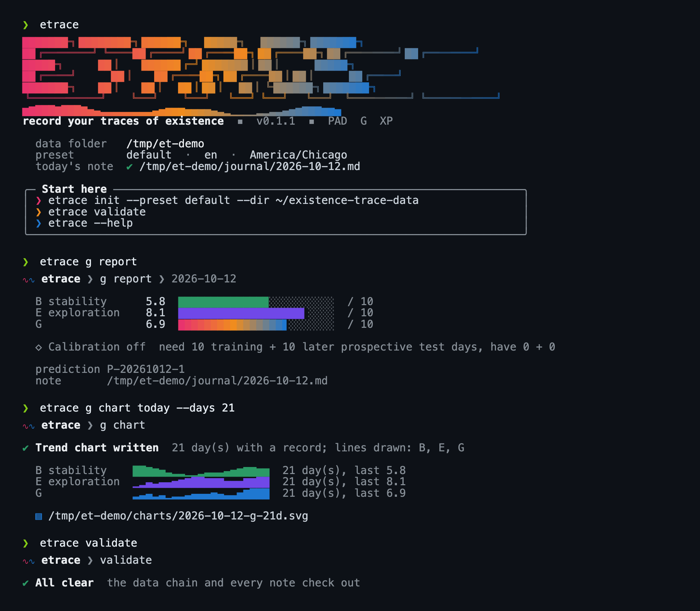

核心想法只有一句：让 LLM 去判断，让确定性的引擎去计算、校验、去重、拒绝坏输入。仓库里的每个模块都是在把某个承诺变成代码，并且让测试能抓住它被违反的瞬间。The core idea fits in one sentence: let the LLM judge, and let a deterministic engine compute, validate, de-duplicate and reject bad input. Every module in the repository turns one promise into code, so that a test can catch the moment it is broken.
代理（Codex、Claude Code 或 cron 调起的 claude）只通过 python3 -m etrace 与系统交互，不直接改数据文件。引擎一旦发现 JSON 不合格就以 field: message 的形式退回，代理据此重试。The agent (Codex, Claude Code, or claude started by cron) talks to the system only through python3 -m etrace and never edits data files directly. When the engine finds invalid JSON it sends it back as field: message lines, and the agent retries from them.
代理会犯错，所以每一条写入都要穿过引擎的校验。引擎不懂语义，但懂结构、来源、去重和时间顺序，这些恰好是 LLM 最容易悄悄违反的东西。Agents make mistakes, so every write passes through the engine's validation. The engine knows no semantics, but it knows structure, provenance, de-duplication and ordering, which are exactly what an LLM breaks most quietly.
几乎每个模块都接受 data_dir（路径或 Store），内部用 with store.lock() 读改写，错误统一成带 .errors 列表的异常类，每个文件头的 docstring 就是这个模块的规格书。Nearly every module takes data_dir (a path or a Store), does read-modify-write inside with store.lock(), and raises an exception class carrying an .errors list. The docstring at the top of each file is that module's specification.
只允许向下依赖：cli 依赖领域模块，领域模块依赖 presets、journal 与 store，store 不依赖任何东西。适配器（邮件、Notion、调度器）都是可选的叶子，不装它们核心照样运行。Dependencies point only downwards: cli depends on domain modules, domain modules on presets, journal and store, and store on nothing. Adapters (email, Notion, scheduler) are optional leaves; the core runs without them.
| 文件File | 行数Lines | 层Layer | 职责Responsibility |
|---|
退出码是代理与引擎之间最重要的契约：2 表示你的输入错了（按 error: 行修，最多重试两次），1 表示命令跑了但失败了（不要掩盖），0 才是成功。validate 是例外：它把一切失败都归为 1。The exit code is the most important contract between agent and engine: 2 means your input was wrong (fix it from the error: lines, at most two retries), 1 means the command ran but failed (do not hide it), and 0 is success. validate is the exception: it maps every failure to 1.
error: 行，退出码 2。argparse errors are rewritten as InputError and printed as error: lines, exit 2.--config、$ETRACE_CONFIG、当前目录的顺序找 trace.toml；未知键直接报错，不静默回退。trace.toml is found via --config, $ETRACE_CONFIG, then the current directory; an unknown key is an error, never a silent default.check_fields 先挡住缺字段和多余字段，再交给领域模块。Reads the agent's JSON file; check_fields stops missing and unknown fields before the domain module sees them..errors，统一成退出码 2；StoreError、OSError、CheckpointError 则是 1。Domain exceptions (PadError, XPError, DecisionError...) all carry .errors and become exit 2; StoreError, OSError and CheckpointError become exit 1.render.py 画成彩色视图。--json / --pretty / --no-color 可放在命令行任意位置，也认 NO_COLOR 和 FORCE_COLOR。When output is piped (agents, scripts) exactly one JSON object goes to stdout; in a terminal render.py draws a coloured view. --json, --pretty and --no-color may sit anywhere on the line; NO_COLOR and FORCE_COLOR are honoured.error: points[0].P: must be within 0-5, got 9 error: points[0].source: required for model_inference error: points[0].confidence: required for model_inference error: points[1].bogus: unknown field
{
"ok": true,
"problems": []
}except InputError as exc:
for line in exc.errors:
err.write(f"error: {line}\n")
return 1 if is_validate else 2
except Failure as exc:
... # ran, but failed
return 1
except _INPUT_ERRORS as exc: # domain errors with .errors
...
return 1 if is_validate else 2
except (StoreError, checkpoint.CheckpointError, OSError) as exc:
err.write(f"failed: {exc}\n")
return 1横幅、进度条、趋势折线、对勾提示都是真实输出（演示数据是虚构的）。不是终端时自动退回 JSON，Unicode 不可用时退回 ASCII。Banner, bars, trend sparklines and check marks are real output (the demo data is synthetic). Output that is not a terminal falls back to JSON, and a terminal without Unicode falls back to ASCII.

| 命令Command | 做什么What it does | 落到哪个模块Module |
|---|---|---|
init | 从预设创建新数据目录、配置和今天的笔记Creates a data directory, config and today's note from a preset | cli, presets, journal |
note new | write | 建笔记；只替换某个 ai 块并读回Create a note; replace one ai block and read it back | journal |
question add | 登记带证据的提问，去重Files an evidence-backed question, de-duplicated | container/questions |
feedback ingest | 从笔记反馈区取入反馈，并给被回答的问题收尾Ingests feedback from notes and closes answered questions | container/feedback |
decide | 写入决定及其规则变更Stores a decision and its rule changes | container/decisions, rules |
usage add | 写使用回执，必须读回核对Stores a usage receipt, which must be read back | container/usage |
outreach send | 把问题与决定报告写进笔记，可选邮件Writes questions and the decision report into the note, optionally by email | outreach/note, email |
pad add | chart | 记录 PAD 读数；画 SVG 并写回 ai:pad 块Records PAD readings; draws the SVG and writes the ai:pad block | models/pad, chart |
g predict | feedback | report | chart | 冻结预测；记录对预测的反馈（细项、B、E 或 G）；生成 G 报告块；画 B/E/G 趋势图（带宽 4.5 天）Freezes a prediction; records feedback on it (an item, B, E or G); draws the B/E/G trend (4.5-day bandwidth); builds the G report block | models/g |
xp score | 计分并追加新版本Scores a day and appends a revision | models/xp |
audit weekly | 生成周审计 md 与 jsonWrites the weekly audit as md and json | container/audit |
checkpoint | 本地 git 提交，没变化就不提交Local git commit, none when nothing changed | checkpoint |
rules list | 列出生效规则（可按作用域）Lists active rules, optionally by scope | container/rules |
prompt | 渲染某个任务的代理提示词Renders the agent prompt for a task | prompts |
notion push | 单向镜像当天笔记One-way mirror of the day's note | adapters/notion |
schedule | 为代理生成调度文件，从不安装Writes scheduler files, never installs them | adapters/scheduler |
validate | 检查整条数据链和笔记，失败时退出码 1Checks the data chain and notes; exit 1 on any failure | container/validate |
所有「事实」都存成 JSONL 里的一行。要改变一个事实，就追加一条新记录，用 supersedes 指向旧的。只有 rules.json 这种整体状态文件才会被替换，而且通过临时文件加 os.replace 原子完成。Every fact is one line in a JSONL file. To change a fact you append a new record that points at the old one through supersedes. Only whole-state files such as rules.json are replaced, and that is atomic through a temp file plus os.replace.
每条记录必须有唯一的 id，重复或缺失抛 InvalidRecord。Every record needs a unique id; a duplicate or missing id raises InvalidRecord.
锁文件 .etrace.lock：默认等 10 秒，超时抛 LockTimeout；超过 300 秒的旧锁抛 StaleLockError，但不会被自动删除，是否清理由人决定。Lock file .etrace.lock: waits 10 seconds by default, then raises LockTimeout; a lock older than 300 seconds raises StaleLockError and is never removed automatically, because clearing it is a human decision.
读到坏行抛 CorruptFile，不会跳过。A corrupt line raises CorruptFile; it is never skipped.
原子写：临时文件、fsync、os.replace，并且按字节写（newline=""），不做换行转换。Atomic write: temp file, fsync, os.replace, written byte for byte (newline="") with no newline translation.
fd, tmp = tempfile.mkstemp(prefix=".tmp-", dir=directory)
try:
with os.fdopen(fd, "w", encoding="utf-8", newline="") as fh:
fh.write(text)
fh.flush()
os.fsync(fh.fileno())
os.replace(tmp, path)
except BaseException:
if os.path.exists(tmp):
os.unlink(tmp)
raise| 文件File | 谁写Written by | 记录 idRecord id |
|---|---|---|
pad.jsonl | models/pad.record | PAD-YYYYMMDD-N |
g.jsonl | models/g.record, refill | G-YYYYMMDD-rN |
predictions.jsonl | g.predict | P-YYYYMMDD-N |
g_feedback.jsonl | g.feedback | ... |
xp.jsonl | xp.record | XP-YYYYMMDD-rN |
questions.jsonl | container/questions | Q-YYYYMMDD-N |
feedback.jsonl | container/feedback | DATE:feedback:HASH12 |
decisions.jsonl | container/decisions | D-YYYYMMDD-N |
usage.jsonl | container/usage | U-YYYYMMDD-N |
notifications.jsonl | outreach/note, email | N-YYYYMMDD-N |
notion.jsonl | adapters/notion | NO-YYYYMMDD-N |
rules.json | container/rules (atomic) | 整体状态，带 versionwhole state with a version |
audits/YYYY-Www.md|json | container/audit | 每周一对文件one pair per week |
一次读数；同一天同一时段再写会追加新记录并用 supersedes 指向旧的，points_for() 只返回每个时段最新的一条。模型推断（model_inference）必须带 source 和 confidence。One reading. Writing the same date and slot again appends a new record that points back through supersedes, and points_for() returns only the latest per slot. A model_inference point must carry source and confidence.
{
"id": "PAD-20260302-1",
"date": "2026-03-02",
"point": {
"date": "2026-03-02",
"slot": "morning",
"P": 3,
"A": 2,
"D": 3,
"provenance": "self_report"
},
"supersedes": null,
"recorded_at": "2026-10-11T00:10:40.067613+00:00"
}笔记反馈区按空行拆条，每条原样存一次，id 是 日期:feedback:原文 sha256 的前 12 位。条目被编辑后哈希变化，新版本通过 supersedes 指向消失的旧版本，version 加一。The feedback zone is split by blank lines and each entry is stored once, verbatim; the id is date:feedback:first 12 hex of sha256. If an entry is edited its hash changes and the new version points at the vanished one through supersedes, with version plus one.
{
"id": "2026-03-02:feedback:f3fd8d34072d",
"source": "note",
"block": "user:feedback",
"note_date": "2026-03-02",
"refers_to_date": "2026-03-02",
"observed_at": "2026-10-11T00:10:39.861259+00:00",
"text": "Please keep the narrative short. Three or four sentences is enough for me.",
"question_id": null,
"entry_index": 0,
"supersedes": null,
"version": 1
}必须带证据（原话或可验证行为）、恰好两个不同的候选判断、dedupe_key。同一个 key 已开放或已回答就拒绝；仍开放的问题最多追问一次。Must carry evidence (her own words or verifiable behaviour), exactly two different candidate judgements and a dedupe_key. A key that is open or answered is rejected, and an open question gets at most one follow-up.
{
"type": "question",
"source": "note",
"date": "2026-03-03",
"evidence": {
"kind": "quote",
"text": "Felt flat all afternoon and did the bare minimum."
},
"candidates": [
"the wait in the rain drained her",
"the shift itself was heavy"
],
"uncertainty": "Was the flat afternoon about the commute or about work?",
"dimensions": [
"P",
"A",
"B1"
],
"dedupe_key": "flat-afternoon-2026-03-03",
"asked_at": "2026-10-11T00:10:39.767816+00:00",
"id": "Q-20260303-1"
}必须引用 feedback.jsonl 里真实存在的反馈 id，并声明 value_source 是 user 还是 agent_decision。每条规则变更都经过 rules 模块的作用域取代，结果和 rules_version 一起记下。Must cite feedback ids that exist in feedback.jsonl and declare value_source as user or agent_decision. Every rule change goes through scoped supersession in the rules module, and the outcome is stored with the rules_version.
{
"type": "decision",
"feedback_ids": [
"2026-03-02:feedback:f3fd8d34072d",
"2026-03-04:feedback:775b204a9b49",
"2026-03-04:feedback:87d36d398b24"
],
"decision": "Keep the narrative to three or four sentences; when an afternoon goes flat, ask about the commute before the work; treat a word in the PAD self table as a hint.",
"value_source": "user",
"rule_changes": [
{
"rule_id": "narrative-length",
"scope": "narrative:length",
"status": "active",
"superseded_by": null,
"reason": "Juniper asked for a short narrative"
},
{
"rule_id": "commute-first",
"scope": "questions:low-energy",
"status": "active",
"superseded_by": null,
"reason": "her answer to Q-20260303-1"
},
{
"rule_id": "pad-word-hint",
"scope": "pad:self-word",
"status": "active",
"superseded_by": null,
"reason": "she said her word is a hint, not the final word"
}
],
"rules_version": 12,
"decided_at": "2026-10-11T00:10:39.963852+00:00",
"id": "D-20261011-1"
}状态只有 changed、confirmed、no_match、not_applicable、blocked。只有前两种算「已应用」，并且必须 verified_readback: true。Status is one of changed, confirmed, no_match, not_applicable, blocked. Only the first two count as applied, and they need verified_readback: true.
{
"task": "daily",
"target": "journal/2026-03-04.md",
"rule_version": 12,
"feedback_ids": [],
"decision_ids": [
"D-20261011-1"
],
"before": "narrative rule: none (the agent wrote a free-length narrative)",
"after": "ai:narrative for 2026-03-04 has three sentences",
"status": "changed",
"verified_readback": true,
"recorded_at": "2026-10-11T00:10:51.676247+00:00",
"id": "U-20261011-1"
}一条规则带作用域、expressed_at（用户原话表达的时间）和状态。注意版本号 12：每次变更都会让整体 version 加一。A rule carries a scope, expressed_at (when the user expressed it) and a status. Note the version 12: every change bumps the whole-file version.
{
"version": 12,
"rules": [
{
"id": "narrative-length",
"scope": "narrative:length",
"text": "Keep the daily narrative to three or four sentences.",
"expressed_at": "2026-03-02T21:00:00+00:00",
"source_feedback_id": "2026-03-02:feedback:f3fd8d34072d",
"added_in_version": 10,
"status": "active",
"superseded_by": null,
"superseded_reason": null,
"superseded_in_version": null
}
]
}只有在笔记被读回、并且确认 ai:questions 块里真的有这段文字之后才会追加。相同文本重跑不产生新记录。Appended only after the note is read back and the ai:questions block is found to contain the text. Re-running with identical text records nothing new.
{
"channel": "note",
"date": "2026-03-04",
"status": "sent",
"verified_readback": true,
"question_ids": [],
"decision_ids": [
"D-20261011-1"
],
"daily_status": "no new important questions",
"language": "en",
"content_hash": "a616a408fe3bf644eea40c118324cb16f80b0057b61104c99785b056928341ec",
"sent_at": "2026-10-11T00:10:42.464393+00:00",
"id": "N-20260304-1"
}g predict 把某天最新的 G 修订冻结成快照：同一修订和同一评分标准版本重复调用返回同一份快照，快照从不被编辑。g predict freezes a day's latest G revision as a snapshot: the same revision under the same rubric version returns the same snapshot, and snapshots are never edited.
{
"id": "P-20260302-1",
"date": "2026-03-02",
"revision": 1,
"g_record_id": "G-20260302-r1",
"rubric_version": "1.4.0",
"items": [
{
"code": "B1",
"value": 7,
"provenance": "self_report",
"source": "note: My G self-rating",
"confidence": "high"
},
"... 7 more items"
],
"training_eligible": true,
"created_at": "2026-10-11T00:10:40.287511+00:00"
}笔记是普通 Markdown，用注释行分块。块的归属写在标记里，引擎据此决定谁可以动哪一块。A note is plain Markdown split into blocks by comment lines. Ownership is written in the marker, and the engine uses it to decide who may touch which block.
<!-- trace:ai:NAME --> AI owned, replace_ai_block may rewrite <!-- trace:user:NAME --> the user's own text, protected <!-- trace:verbatim --> original version, append-only _MARKER = re.compile( r"^<!-- trace:(?:(?P<kind>ai|user):(?P<name>[a-z0-9][a-z0-9-]*)" r"|(?P<verbatim>verbatim)) -->[ \t]*\r?\n?$")
render() 与原文逐字节一致，因为读写都用 newline=""。Splits by marker into Blocks; render() is byte-identical to the source because reads and writes use newline="".ProtectedBlockChanged。「之前」取磁盘上的当前内容，所以用户在你加载之后做的修改不会被覆盖。Hashes every user and verbatim block of the file on disk and of the new text; any difference raises ProtectedBlockChanged. "Before" is the file on disk now, so edits the user made since you loaded are never overwritten.JournalError（原则 8）。After writing, the file is read again and compared with the text written; a mismatch raises JournalError (principle 8).doc = journal.load(path)
bad = journal.parse(doc.render().replace(
"the loop exercise finally clicked",
"the loop exercise clicked"))
journal.save(bad, path)
ProtectedBlockChanged: protected blocks would change:
user:journal, verbatimchanged = []
for key in sorted(set(before) | set(after)):
if before.get(key) == after.get(key):
continue
if key == "verbatim" and verbatim_append and \
(before.get(key), after.get(key)) == verbatim_append:
continue # the one allowed change
if key not in after: changed.append(f"{key} (removed)")
elif key not in before: changed.append(f"{key} (added)")
else: changed.append(key)
if changed:
raise ProtectedBlockChanged(
"protected blocks would change: " + ", ".join(changed))模板顺序固定为 headline、questions、pad、pad-self、xp、g、g-self、journal、feedback、narrative、verbatim，来自 docs/SYSTEM_DESIGN.md 4.4。The template order is fixed as headline, questions, pad, pad-self, xp, g, g-self, journal, feedback, narrative, verbatim, from docs/SYSTEM_DESIGN.md 4.4.
原则原文来自 etrace/prompts/en/_principles.md，每个任务提示词都会带上它。下表告诉你，每一条在哪里被强制执行，违反它的瞬间由哪个测试文件抓住。The wording comes from etrace/prompts/en/_principles.md and is included in every task prompt. The table shows where each one is enforced and which test file catches a violation.
| # | 原则Principle | 强制执行的地方Enforced in | 测试Tests |
|---|---|---|---|
| 1 | Verbatim 用户原话一字不改The user's words stay word for word | journal.save → _check, ProtectedBlockChanged, append_verbatim | test_journal |
| 2 | Provenance 每个数字声明来源、依据、置信度Every number states provenance, source, confidence | PadPoint.__post_init__, GItem: model_inference 必须有 source 与 confidenceneeds source and confidence | test_pad, test_g |
| 3 | Missing is not 0 缺失不是 0Missing is not 0 | g.compute 缺项返回 None，display 显示「缺 / n/a」；gap_fill 低置信度、training_eligible 为假returns None for a missing part and display shows n/a; gap_fill is low confidence and never training eligible; xp.week_total 把缺的日子列为 missinglists missing days | test_g, test_g_gap_fill, test_xp |
| 4 | Events once 重大事件只记一次，记在发生那天A major event is booked once, on its day | xp._events event_id 唯一，occurred_on 必须等于计分日unique event_id, occurred_on must equal the scored date; xp.record 拒绝已记在别的日子的 idrejects an id booked on another day | test_xp |
| 5 | Freeze predictions 先冻结再评判；校准要 10 + 10 天Freeze before judging; calibration needs 10 + 10 days | g.predict 快照不可变immutable snapshots; TRAIN_DAYS = TEST_DAYS = 10; g.calibration | test_g_calibration |
| 6 | Latest feedback wins 同一作用域内，原话表达更晚的规则取代旧规则In one scope the later-expressed rule replaces the older one | rules.add_rule 按 expressed_at，不是写入顺序by expressed_at, not by write order; feedback supersedes | test_rules, test_feedback |
| 7 | Decide, report, invite 先作合理决定，写明理由，邀请反馈Decide with reasons and invite feedback | decisions 必须引用真实反馈must cite real feedback; note.render_report; audit.reaction 沉默不算同意silence is not approval | test_decisions, test_outreach_note, test_audit |
| 8 | Write, then read back 写完要读回，读过规则不算用过Read back after writing; reading a rule is not using it | journal.save, note.write, usage.verified_readback, validate, audit.weekly, notion 页面块数核对block count check | test_journal, test_audit, test_notion |
| 9 | Self-rating is a reference 自评是参考，不是命令A self-rating is a reference, not an order | self_value 原样保存，与 AI 值不同则必须写 reasonstored untouched; if it differs from the AI value a reason is required (PadPoint, GItem) | test_pad, test_g |
tests/test_privacy.py 扫描每个被 git 跟踪（和未跟踪）的文件，查邮箱（只允许 example.com/.org/.net）、32 位十六进制 id（Notion 风格）和主目录绝对路径。the repository itself must hold no personal data. tests/test_privacy.py scans every tracked (and new untracked) file for emails (only example.com/.org/.net allowed), 32-hex ids (Notion style) and absolute home paths.三个模型都是纯函数加一个追加式的 record()。数值参数（词表、权重、上限）不写在代码里，而是在预设的 JSON 里，代码只实现形状。All three models are pure functions plus an append-only record(). The numeric parameters (word table, weights, caps) are not in the code but in the preset JSON; the code implements only the shape.
PadPoint 是冻结的 dataclass，构造时就校验：日期、槽位（六个命名槽或精确的 HH:MM）、P/A/D 在 0 到 5、来源与置信度。from_dict 拒绝未知字段。PadPoint is a frozen dataclass validated at construction: date, slot (six named slots or an exact HH:MM), P/A/D within 0 to 5, provenance and confidence. from_dict rejects unknown fields.
project() 把数值映射到预设的 27 词表：小于 1 的值算 1 档，档位取 band()。project() maps values to the preset's 27-word table: a value below 1 counts as level 1, and the band comes from band().
daily_summary() 是按时长加权的均值；没有 duration_hours 的点按已知时长的平均等权，并在结果里标出 equal_weighted。daily_summary() is a duration-weighted mean; points without duration_hours are equal-weighted at the mean known duration and flagged through equal_weighted.
validate_day() 要求早、中、下午三段都在场，精确时刻归入它所在的槽位。validate_day() requires morning, noon and afternoon, with exact times counting for the slot they fall in.
chart.py 对每条轴做高斯核局部线性平滑（日图带宽 2.5 小时，周图 0.75 天），在 240 个采样点上画折线，输出自带样式的 SVG，没有任何绘图库。chart.py draws each axis with Gaussian-kernel local linear smoothing (bandwidth 2.5 hours for a day, 0.75 days for a week) over 240 samples and emits a self-styled SVG with no plotting library.
def slot_of(slot):
if slot in SLOTS:
return slot
m = _TIME.match(slot) if isinstance(slot, str) else None
if not m:
raise PadError([f"slot: must be one of ..."])
hour = int(m.group(1))
if hour < 5:
hour += 24 # 01:30 belongs to the previous evening
for name, (start, end) in SLOT_RANGES.items():
if start <= hour < end:
return name
# principle 9: self_value is kept as given
if not axis_errors and differs and self.reason is None:
errors.append("reason: required when the values "
"differ from self_value")def local_linear(xs, ys, x0, bandwidth):
"""Gaussian-kernel local linear estimate at x0."""
s0 = s1 = s2 = t0 = t1 = 0.0
for x, y in zip(xs, ys):
d = x - x0
w = math.exp(-0.5 * (d / bandwidth) ** 2)
s0 += w; s1 += w * d; s2 += w * d * d
t0 += w * y; t1 += w * d * y
...
return (s2 * t0 - s1 * t1) / detcompute()：B 和 E 各是四个小项的加权和，G 是平均；任一组缺项，该组为 None，G 也为 None。权重来自预设（B 0.28/0.18/0.36/0.18，E 0.22/0.14/0.36/0.28）。全程不取整，display() 才四舍五入。compute(): B and E are weighted sums of four items each and G is their mean; if a group has a missing item the group is None and so is G. Weights come from the preset (B 0.28/0.18/0.36/0.18, E 0.22/0.14/0.36/0.28). Nothing is rounded until display().
gap_fill() 有三种方法：两侧都有真实值用 historical_bridge（按日期线性插值）；只有更早的值用 continuity_carry_forward；都没有用 scale_prior（5.0）。补出的项一律 low 置信度，只用真实值（不用别的补值）作邻居。引擎自己生成补值，代理传入 gap_fill 会被拒绝。gap_fill() has three methods: real values on both sides give historical_bridge (linear interpolation by date); only an earlier value gives continuity_carry_forward; none gives scale_prior (5.0). Filled items are always low confidence, and neighbours are real values only. The engine makes fills itself; an agent passing gap_fill is rejected.
predict() 冻结预测；calibration() 只有在 10 个训练日加 10 个之后的测试日都满足时才开启，并且补值日不算（training_eligible）。不满足时输出 Calibration off: need 10 training + 10 later test days, have 0 + 0。predict() freezes a prediction; calibration() turns on only with 10 training days plus 10 later test days, and gap-filled days do not count (training_eligible). Otherwise it prints Calibration off: need 10 training + 10 later test days, have 0 + 0.
for group, codes in GROUPS.items():
weights = preset["g"]["groups"][group]["items"]
if all(code in by_code for code in codes):
groups[group] = sum(weights[code]["weight"]
* by_code[code].value for code in codes)
else:
groups[group] = None # never 0
b, e = groups["B"], groups["E"]
g = (b + e) / 2 if b is not None and e is not None else Noneif left and right:
frac = (target - left[0]).days / (right[0] - left[0]).days
value = left[1] + (right[1] - left[1]) * frac
method = "historical_bridge"
elif left:
value, method = left[1], "continuity_carry_forward"
else:
value, method = SCALE_PRIOR, "scale_prior" # 5.0
return GItem(code=code, value=value, provenance="gap_fill",
source=f"gap_fill:{method}", confidence="low", ...)score_day()：六个维度都必须给 0 到 4 的整数等级（0 表示明确的「没有」，缺失是错误），得分是 cap × level / 4；普通成果夹在 0 到 10；事件不封顶，需要唯一的 event_id、等于计分日的 occurred_on 和非负的 points。score_day(): all six dimensions need an integer level 0 to 4 (0 is an explicit "none", a missing one is an error) and score cap × level / 4; ordinary is clamped to 0 to 10; events are uncapped and need a unique event_id, an occurred_on equal to the scored date, and non-negative points.
显示的总分是合计后四舍五入（ROUND_HALF_UP，用 Decimal 避免浮点误差）的整数，没有每日上限。The displayed total is the sum rounded half up (through Decimal, to avoid float error) to an integer, with no daily cap.
record() 保存修订；内容没变就返回已有记录；别的日子已记过的 event_id 抛 XPError。week_total() 只接受周一作为周起点，没有周奖励，没打分的日子列为 missing。record() keeps revisions; unchanged content returns the existing record; an event_id booked on another day raises XPError. week_total() accepts only a Monday as week start, adds no weekly bonus, and lists unscored days as missing.
def _round(value):
return int(decimal.Decimal(repr(float(value))).quantize(
decimal.Decimal("1"), rounding=decimal.ROUND_HALF_UP))
for dim_id, spec in known.items():
...
else:
dims[dim_id] = {"level": level,
"points": spec["cap"] * level / MAX_LEVEL}
if occurred != date:
errors.append(f"{field}.occurred_on: events are booked on "
f"the day they happened ({occurred.isoformat()}), "
f"not {date.isoformat()}")levels 3/2/2/3/2/3 caps 18/16/16/14/14/12 points 13.5 + 8 + 8 + 10.5 + 7 + 9 = 56 ordinary 6 events 0 total 62
question → feedback → decision → rule → receipt → audit。点击每一环，看它的实现、真实的 id，和它拒绝什么。question → feedback → decision → rule → receipt → audit. Click each link to see its implementation, a real id, and what it rejects.
id Q-20260303-1；生命周期 open → answered | skipped；回答必须带 feedback_id，并且这个反馈必须存在。id Q-20260303-1; lifecycle open → answered | skipped; answering needs a feedback_id and that feedback must exist.
拒绝：没有证据、候选不是恰好两个、候选相同、dedupe_key 已开放或已回答、第二次追问。Rejects: no evidence, candidates not exactly two, identical candidates, a dedupe_key already open or answered, a second follow-up.
{
"type": "question",
"source": "note",
"date": "2026-03-03",
"evidence": {
"kind": "quote",
"text": "Felt flat all afternoon and did the bare minimum."
},
"candidates": [
"the wait in the rain drained her",
"the shift itself was heavy"
],
"uncertainty": "Was the flat afternoon about the commute or about work?",
"dimensions": [
"P",
"A",
"B1"
],
"dedupe_key": "flat-afternoon-2026-03-03",
"asked_at": "2026-10-11T00:10:39.767816+00:00",
"id": "Q-20260303-1"
}引擎扫描笔记的 user:feedback 块，按空行拆条，跳过模板提示（<!-- hint -->）和标题。以 [Q-...] 开头的条目带上 question_id，cmd_feedback_ingest 随后把对应问题标为 answered。重复运行不会产生新记录。The engine scans the note's user:feedback block, splits by blank line, and skips template hints (<!-- hint -->) and the title. An entry starting with [Q-...] gets a question_id, and cmd_feedback_ingest then marks that question answered. Re-running creates nothing new.
{
"id": "2026-03-04:feedback:775b204a9b49",
"source": "note",
"block": "user:feedback",
"note_date": "2026-03-04",
"refers_to_date": "2026-03-04",
"observed_at": "2026-10-11T00:10:39.861259+00:00",
"text": "[Q-20260303-1] It was the bus, not the work. Waiting in the rain drains me more than a busy shift does.",
"question_id": "Q-20260303-1",
"entry_index": 0,
"supersedes": null,
"version": 1
}代理给出一个决定和若干 rule_changes，引擎逐条走 rules.add_rule，把结果和 rules_version 一起写进决定记录。如果决定暂时无法应用，可 mark_pending 说明原因，validate 就把它当作「已知未完成」而不是「漏掉」。The agent supplies a decision and some rule_changes; the engine runs each through rules.add_rule and stores the results with the rules_version in the decision record. If a decision cannot be applied yet, mark_pending records why, and validate treats it as known open rather than missed.
{
"type": "decision",
"feedback_ids": [
"2026-03-02:feedback:f3fd8d34072d",
"2026-03-04:feedback:775b204a9b49",
"2026-03-04:feedback:87d36d398b24"
],
"decision": "Keep the narrative to three or four sentences; when an afternoon goes flat, ask about the commute before the work; treat a word in the PAD self table as a hint.",
"value_source": "user",
"rule_changes": [
{
"rule_id": "narrative-length",
"scope": "narrative:length",
"status": "active",
"superseded_by": null,
"reason": "Juniper asked for a short narrative"
},
{
"rule_id": "commute-first",
"scope": "questions:low-energy",
"status": "active",
"superseded_by": null,
"reason": "her answer to Q-20260303-1"
},
{
"rule_id": "pad-word-hint",
"scope": "pad:self-word",
"status": "active",
"superseded_by": null,
"reason": "she said her word is a hint, not the final word"
}
],
"rules_version": 12,
"decided_at": "2026-10-11T00:10:39.963852+00:00",
"id": "D-20261011-1"
}同一 scope 里，新规则取代 expressed_at 不晚于它的生效规则；如果新规则的原话反而更早，它自己一出生就是 superseded。旧规则不删除，留下 superseded_by、原因和版本。这样「后写入但更早表达」的规则不会推翻更新的偏好。Within one scope, a new rule supersedes any active rule whose expressed_at is not later than its own; if the new rule was expressed earlier it is born superseded. Old rules are never deleted and keep superseded_by, a reason and the version. So a rule written later but expressed earlier cannot overturn a newer preference.
current = [r for r in rules
if r["scope"] == scope and r["status"] == "active"]
for old in current:
if _when(old["expressed_at"]) <= when:
old.update(status="superseded", superseded_by=rule_id, ...)
else:
new.update(status="superseded", superseded_by=old["id"], ...)
rules.append(new)
data["version"] = version
write_json_atomic(_path(store), data) # one atomic replace{
"version": 12,
"rules": [
{
"id": "narrative-length",
"scope": "narrative:length",
"text": "Keep the daily narrative to three or four sentences.",
"expressed_at": "2026-03-02T21:00:00+00:00",
"source_feedback_id": "2026-03-02:feedback:f3fd8d34072d",
"added_in_version": 10,
"status": "active",
"superseded_by": null,
"superseded_reason": null,
"superseded_in_version": null
}
]
}代理应用规则后，写一条回执：before 与 after 描述产物的真实变化，rule_version、引用的 decision_ids，以及 verified_readback。只有 changed 和 confirmed 才算应用；no_match、not_applicable、blocked 如实记录，但不算数。After applying a rule the agent writes a receipt: before and after describing the real change in the product, the rule_version, the cited decision_ids, and verified_readback. Only changed and confirmed count as applied; no_match, not_applicable and blocked are recorded honestly but do not count.
{
"task": "daily",
"target": "journal/2026-03-04.md",
"rule_version": 12,
"feedback_ids": [],
"decision_ids": [
"D-20261011-1"
],
"before": "narrative rule: none (the agent wrote a free-length narrative)",
"after": "ai:narrative for 2026-03-04 has three sentences",
"status": "changed",
"verified_readback": true,
"recorded_at": "2026-10-11T00:10:51.676247+00:00",
"id": "U-20261011-1"
}validate 只问「链的每一环存不存在」：回答过的问题有没有反馈、决定有没有来源反馈、超过 2 天的决定有没有回执（或被标为 pending）、回执有没有读回、规则有没有被某个决定认领。validate only asks whether each link exists: does an answered question have feedback, does a decision have source feedback, does a decision older than 2 days have a receipt (or a pending mark), was the receipt read back, is a rule claimed by some decision.
audit weekly 还要问「真的用上了吗」：回执必须在决定之后、且基于决定产生的规则版本；过了宽限期（2 天）只有 no_match 之类的回执就算断链。它还抽样一条已应用的回执给人复核，并用关键词判断用户对每个决定的反应：赞成、反对、其他回复，或者沉默，沉默单独列出，从不算同意。audit weekly also asks whether it was really used: the receipt must come after the decision and be based on the rule version the decision produced; past the grace period (2 days) a decision with only no_match-style receipts is a broken chain. It samples one applied receipt for a person to check and classifies the user's reaction to each decision by keywords: approved, objected, other reply, or silence, and silence is listed separately and never counted as approval.
# Weekly implementation audit 2026-W41 (2026-10-05 to 2026-10-11) Result: passed. Every chain is complete and every decision was really applied. Structural completeness is not a pass: every decision needs a verified receipt that really applied it (changed / confirmed). ## Broken chains None. ## Still open (not broken) None. ## Decisions without a receipt None. ... - no reply (silence is not approval): D-20261011-1
提示词只负责「排任务」：列出步骤和确切的 JSON 形状，把所有规则交给引擎。这样规则改了，不必改提示词。A prompt only schedules work: it lists the steps and the exact JSON shapes, and defers every rule to the engine. Change a rule and no prompt needs editing.
五个任务：calibrate、feedback、daily、g、audit，每个有 zh 与 en 两份，加上共享的 _principles.md。Five tasks: calibrate, feedback, daily, g, audit, each in zh and en, plus the shared _principles.md.
render() 用 string.Template 填入配置和当前生效规则，上限 6000 字符，绝不把数据目录的绝对路径写进提示词，代理只通过环境变量找到配置。render() fills the config and the active rules through string.Template, caps the result at 6000 characters, and never writes the data directory's absolute path into the prompt; the agent finds its config through an environment variable.
没有生效规则时填入「(no active rules yet)」。可选的 Notion、邮件段落只在配置启用时才出现。With no active rules it inserts "(no active rules yet)". The optional Notion and email paragraphs appear only when configured.
- Every step is a `python3 -m etrace ...` command. It finds trace.toml via $ETRACE_CONFIG or the current directory; do not pass paths you invented. - Never edit data/*.jsonl, rules.json or note files by hand; put agent JSON in a temporary file and pass it as FILE. - Put `--json` right after `etrace` on every command: then each command prints one JSON object. Without it, a terminal gets a human-friendly coloured view. Exit 2 = your JSON or arguments were wrong (fix them from the `error:` lines, at most two retries). Exit 1 = it ran but failed: do not hide it.
python3 -m etrace schedule --target codex|claude-code|cron --out DIR 把 trace.toml 的 [tasks] 变成：codex 每任务一个 automation.toml（RRULE 加时区）、claude-code 每任务一个 shell 脚本、cron 一份 crontab。python3 -m etrace schedule --target codex|claude-code|cron --out DIR turns the [tasks] of trace.toml into: one automation.toml per task for codex (RRULE plus timezone), one shell script per task for claude-code, one crontab for cron.
每次运行都用 etrace prompt TASK --raw 在运行时渲染提示词，所以规则更新后不用重新生成文件。Every run renders its prompt at run time through etrace prompt TASK --raw, so a rule update needs no regeneration.
不碰 crontab、LaunchAgent 或代理自己的配置。It touches no crontab, no LaunchAgent and no agent configuration.
#!/bin/sh
# Generated by `python3 -m etrace schedule --target claude-code`. Not installed.
# task: daily
# schedule: 19:30
# timezone: UTC
# Run it from your own scheduler at those times. CLAUDE and ETRACE_CLAUDE_FLAGS
# override the claude binary and its flags (e.g. allowed tools).
set -eu
cd ~/existence-trace-data && export ETRACE_CONFIG=~/existence-trace-data/trace.toml PYTHONPATH=/path/to/existence-trace
PROMPT=$(python3 -m etrace prompt daily --raw)
"${CLAUDE:-claude}" -p ${ETRACE_CLAUDE_FLAGS:-} "$PROMPT"
# Generated by `python3 -m etrace schedule --target cron`. Not installed. # Review it, then add it yourself with `crontab -e`. # Times are in UTC. CRON_TZ works with cronie/Vixie cron; if your cron # ignores it, convert the times to the machine's local zone. CRON_TZ=UTC 0 9 * * * cd DATA && export ETRACE_CONFIG=... PYTHONPATH=... && python3 -m etrace prompt calibrate --raw | claude -p # etrace calibrate 30 12 * * * cd DATA && export ETRACE_CONFIG=... PYTHONPATH=... && python3 -m etrace prompt feedback --raw | claude -p # etrace feedback 15 22 * * 0 cd DATA && export ETRACE_CONFIG=... PYTHONPATH=... && python3 -m etrace prompt audit --raw | claude -p # etrace audit
渲染 ai:questions 块：开放问题（带 [Q-id]）或每日状态句，加决定报告。「目前没有新的重要疑问」只有在扫描成功后才能说，扫描失败说「无法判断」。写完读回，找到块文本后才追加 notifications.jsonl。Renders the ai:questions block: open questions (with [Q-id]) or the daily status sentence, plus the decision report. "No new important questions" may be said only after a successful scan; a failed scan says it cannot judge. It reads back and appends to notifications.jsonl only once the block text is found.
SMTP 发送，IMAP 读回复。状态 sent 只有在 Sent 文件夹里按 Message-ID 找到才成立，否则是 failed 或 unknown，重跑前先找旧的 Message-ID，避免重复发送。回复必须来自 user_address、晚于提问邮件、主题带 [etrace DATE KIND]；引用和签名被剥掉；反馈 id 是 email:MSGHASH12:QUESTION_ID。邮件正文只含 note.render 的内容，从不读日记。SMTP to send, IMAP to read replies. sent holds only if the message is found in the Sent folder by Message-ID; otherwise it is failed or unknown, and a rerun first looks for the earlier Message-ID to avoid duplicates. A reply must come from user_address, be dated after the question email and carry [etrace DATE KIND] in the subject; quotes and signatures are stripped; the feedback id is email:MSGHASH12:QUESTION_ID. The body holds only what note.render produces and never reads the journal.
单向镜像：只读本地笔记并推送，从不把 Notion 内容读回笔记。笔记没变就不重复推送；变了就建新页面，新页面完整后才归档旧页面，镜像不会出现空档。记录为 pushed 的前提是读回的块数和预期一致，否则 failed 或 unknown。HTTP 走可注入的 transport，测试完全不碰网络。A one-way mirror: it reads the local note and pushes, and never reads Notion content back into notes. An unchanged note is not pushed again; a changed one becomes a new page, and the old page is archived only after the new one is complete, so the mirror is never empty. A record says pushed only if the read-back block count matches, otherwise failed or unknown. HTTP goes through an injectable transport, so tests never touch the network.
让数据目录成为 git 仓库（如果还不是），有变化才提交，从不空提交；不推送，除非 git_remote 明确配置，且从不强推：分叉的远端只报告，不覆盖。从不写用户的全局 git 配置，没有身份时只在这次提交上临时传入中性身份。Makes the data directory a git repository if needed and commits only on change, never an empty commit; nothing is pushed unless git_remote is configured, and never forced: a diverged remote is reported, not overwritten. It never writes the user's global git config; with no identity it passes a neutral one on that commit only.
邮箱与 Notion 的密钥放在 credentials.email / credentials.notion 指向的单独 TOML 文件里，不进 trace.toml，不进日志、记录或提示词，错误原因输出前会被擦除密码。Email and Notion secrets live in separate TOML files pointed to by credentials.email / credentials.notion; they stay out of trace.toml, logs, records and prompts, and error reasons are scrubbed of the password before output.
五个 JSON：pad.json（27 词表与档位）、g.json（分项、权重、锚点、版本）、xp.json（六个维度的上限与等级描述）、rules.json（起步规则，含九条原则的基线规则）、question_templates.json。每个面向用户的文字都是 {"zh": ..., "en": ...}。Five JSON files: pad.json (the 27-word table and bands), g.json (items, weights, anchors, version), xp.json (caps and level descriptions of six dimensions), rules.json (starter rules, including baseline rules for the nine principles) and question_templates.json. Every user-facing label is {"zh": ..., "en": ...}.
presets.load() 读取并校验全部五个文件，错误信息指出文件和字段。default 与 tiger-method 共用 PAD 与 G，只在 XP 的维度命名上不同。G 的评分标准有版本号，只有同一版本的标签才可互相比较。presets.load() reads and validates all five files and names the file and field in any error. default and tiger-method share PAD and G and differ only in XP dimension naming. G's rubric has a version, and labels are comparable only within one version.
所有键都可选，未知键抛 ConfigError 并指出键名，拼错不会静默回退。键：timezone、data_dir、preset、language、outreach（note 或 note+email）、git_remote、tasks、credentials。任务时间必须是 HH:MM，审计可以写 Sun 22:15。Every key is optional and an unknown key raises ConfigError naming it, so a typo never silently falls back. Keys: timezone, data_dir, preset, language, outreach (note or note+email), git_remote, tasks, credentials. Task times must be HH:MM, and audit may be Sun 22:15.
默认任务：calibrate 09:00，feedback 12:30 和 20:30，daily 19:30，g 20:30，audit Sun 22:15。用 tomllib 解析，所以需要 Python 3.11 以上。Default tasks: calibrate 09:00, feedback 12:30 and 20:30, daily 19:30, g 20:30, audit Sun 22:15. It parses with tomllib, hence Python 3.11 or newer.
只用标准库的 unittest，每个原则至少有一个能在违反时变红的测试，外部世界（SMTP、IMAP、Notion、git）都被替身挡住，测试从不联网。Only the standard-library unittest. Every principle has at least one test that turns red when it is broken, and the outside world (SMTP, IMAP, Notion, git) is replaced by doubles, so tests never use the network.
python3 -m unittest discover -s tests -v Ran 372 tests in 4.029s OK
端到端：虚构人物 Juniper 通过 CLI 跑完三天的完整回路（写笔记、PAD、G、XP、提问、反馈、决定、回执、周审计），并与 examples/persona/expected.json 对照。本页用到的真实记录就来自这条路径。End to end: the fictional persona Juniper runs three full days through the CLI (notes, PAD, G, XP, question, feedback, decision, receipt, weekly audit) and the results are compared with examples/persona/expected.json. The real records on this page come from that path.
先读 scripts/ralph/progress.txt 的「Codebase Patterns」，再照下面三个配方做。Read the "Codebase Patterns" section of scripts/ralph/progress.txt first, then follow one of these three recipes.
etrace/preset_data/my-method/。Rename it, for example etrace/preset_data/my-method/.presets.NAMES（journal.PRESETS 与 init --preset 的选项都引用它）和 config.PRESETS 是两处独立的元组，都要加。presets.NAMES (used by journal.PRESETS and the init --preset choices) and config.PRESETS are two separate tuples; add the name to both.test_presets.py 会用校验器检查所有预设，字段写错会指出文件和字段名。test_presets.py validates every preset and names the file and field of any mistake.{"version": "1.0.0",
"levels": {"0": {"zh": "没有", "en": "none"}, ... "4": {...}},
"dimensions": [
{"id": "rhythm", "cap": 18,
"label": {"zh": "节律与稳定", "en": "Rhythm and stability"}},
...],
"ordinary": {"min": 0, "max": 10, "label": {...}},
"events": {"capped": false, "requires": [...]}}adapters/scheduler.py 里仿照 cron_files(cfg)，返回 {文件名: 文本}。In adapters/scheduler.py, model it on cron_files(cfg) and return {filename: text}.TARGETS 和 _RENDER。命令行的 --target 选项自动跟上。Add it to TARGETS and _RENDER; the CLI --target choice follows.env_command(cfg) 与 prompt_command(cfg, task)，这样提示词在运行时渲染。Only write files, never install; use env_command(cfg) and prompt_command(cfg, task) so the prompt renders at run time.TARGETS = ("codex", "claude-code", "cron")
_RENDER = {"codex": codex_files,
"claude-code": claude_code_files,
"cron": cron_files}
def render(target, cfg):
return _RENDER[target](cfg)data_dir，用 with store.lock()，错误抛带 .errors 的异常。Take data_dir, use with store.lock(), and raise an exception carrying .errors.read_json 与 check_fields 先挡住形状错误；ctx.store、ctx.preset 是属性；返回一个可 JSON 序列化的字典。Use read_json and check_fields to stop shape errors first; ctx.store and ctx.preset are properties; return a JSON-serialisable dict._INPUT_ERRORS，在 build_parser 里加子命令。Add the new exception to _INPUT_ERRORS and the sub-command to build_parser.test_cli.py 覆盖退出码 0、1、2，需要时更新 prompts/。Cover exit codes 0, 1 and 2 in test_cli.py, and update prompts/ if needed.def cmd_xp_score(ctx, args):
obj = check_fields(read_json(args.file),
("date", "levels", "ordinary"), ("events",))
day = xp.score_day(ctx.day(obj["date"]), obj["levels"],
obj["ordinary"], obj.get("events", []),
ctx.preset)
rec = xp.record(ctx.store, day)
... # week total, then one JSON dict
return {"xp": rec["id"], "date": day.date, "total": day.total, ...}仓库由一个自主循环（Ralph）按 scripts/ralph/prd.json 里的 24 条用户故事逐条实现，每轮读 progress.txt 的经验再动手。因为循环里的 AI 有写权限，所以安全是分层的，而且由操作系统而不是 AI 自己来执行。The repository was built by an autonomous loop (Ralph) that implements the 24 user stories in scripts/ralph/prd.json one by one, reading the lessons in progress.txt each round. Because the AI in the loop has write access, safety is layered and enforced by the operating system rather than by the AI itself.
safe-ralph.sh 在 macOS 的 sandbox-exec 里运行循环，沙箱配置由 make-guard.sh 从 guard.sb 模板加受保护目录列表生成。受保护目录既不能读也不能写；shell 配置、git 配置、ssh 配置和登录项不能写。runs the loop inside macOS sandbox-exec; make-guard.sh builds the profile from the guard.sb template plus the list of protected directories. Protected directories can be neither read nor written; shell config, git config, ssh config and login items cannot be written.
真实的目录列表在 protected-paths.local（不在 git 里），仓库里只有 protected-paths.example。这样仓库永远不会含有主人个人系统的路径。The real list lives in protected-paths.local (not in git); the repository holds only protected-paths.example. So the repository never contains paths of the owner's personal system.
no-mcp.json 是 {"mcpServers":{}}：循环里的 AI 没有任何 MCP 连接器，所以无法触碰 Notion 等外部工作区。is {"mcpServers":{}}: the AI in the loop has no MCP connectors, so it cannot touch Notion or any other workspace.
safe-ralph.sh 拒绝在仓库根目录以外运行；设置 ETRACE_SANDBOXED=1。直接跑 ralph.sh 是不被允许的，文件里写明「Always use this instead」。safe-ralph.sh refuses to run outside the repository root and sets ETRACE_SANDBOXED=1. Running ralph.sh directly is not allowed; the script says "Always use this instead".
仓库的 CLAUDE.md 把边界写成每个代理运行都要读的指令：只在仓库内工作、不碰受保护目录与任何 Notion 工作区、不编辑 shell 与系统配置、不把真实个人数据或绝对 home 路径写进仓库、不做导入主人个人系统数据的工具。test_privacy 再用测试守住最后一条。The repository's CLAUDE.md states the boundary as instructions every agent run reads: work only inside the repo, never touch protected directories or any Notion workspace, never edit shell or system config, never put real personal data or absolute home paths in the repo, and never build a tool that imports the owner's personal system data. test_privacy then guards part of that with a test.
prd.json 的每条故事有验收标准和 passes 标志；progress.txt 记录每轮学到的模式，下一轮先读。现在 24 条全部为 true。Each story in prd.json has acceptance criteria and a passes flag; progress.txt records the patterns learned each round and the next round reads it first. All 24 are now true.
| ID | Title |
|---|